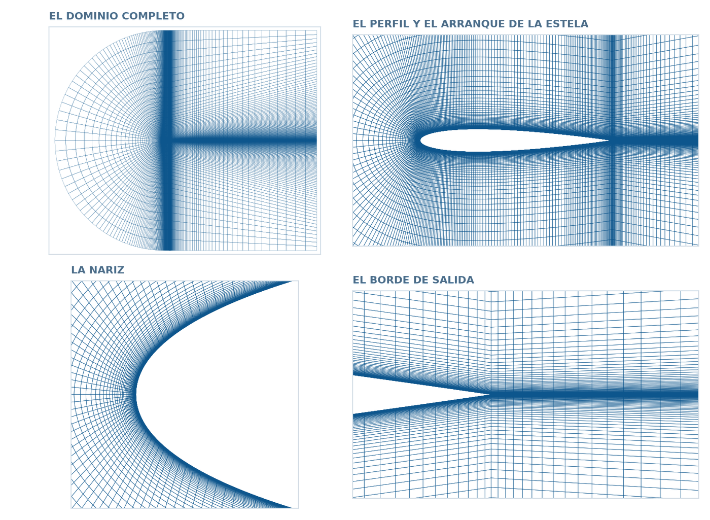
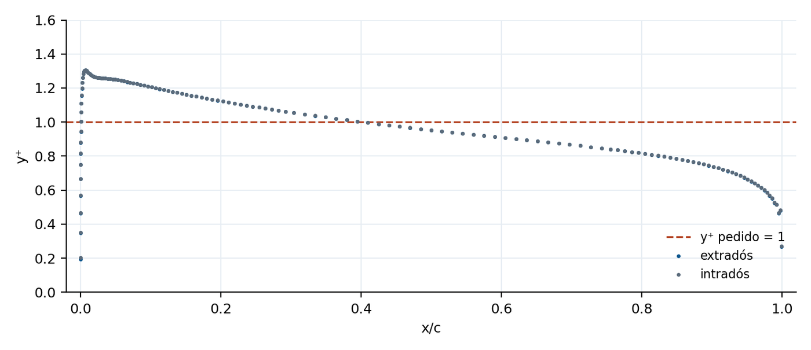
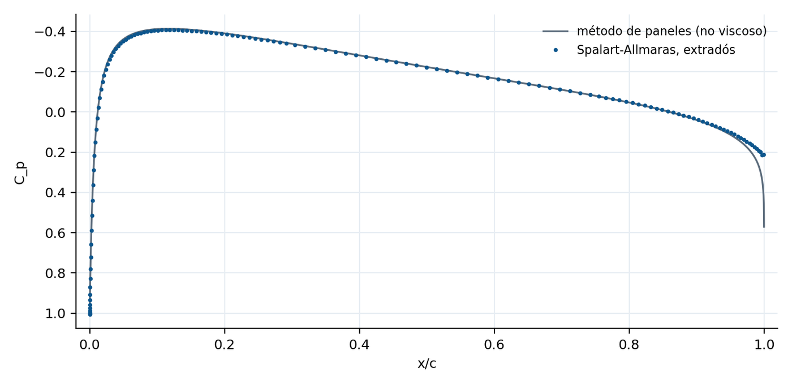
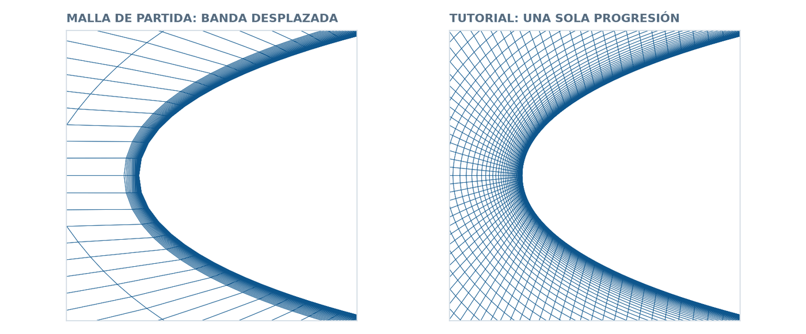
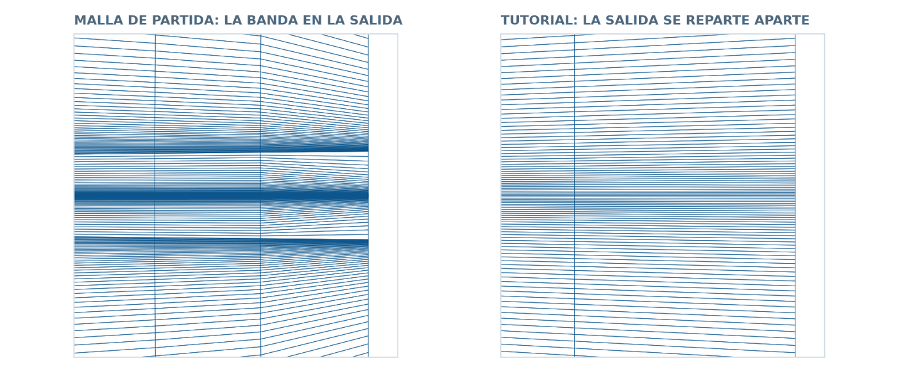

The same six blocks, now written with parameters: the airfoil comes from its four-digit code, the first cell height from a target y+, and every progression from the cell sizes you ask for. A Spalart-Allmaras run measures what the mesh was designed to deliver.
Gmsh · Tutorial 2.2.2
El perfil en un dominio en C: parámetros, capa límite y estela
Los mismos bloques, ahora escritos con parámetros: el perfil sale de su código de cuatro dígitos, la primera celda de un y⁺ pedido y cada progresión de los tamaños de celda que uno elige. Un cálculo con Spalart-Allmaras mide lo que la malla prometía.
Gmsh · Tutorial 2.2.2
Das C-Netz mit Parametern: Grenzschicht und Nachlauf
Dieselben Blöcke, nun mit Parametern geschrieben: das Profil aus seinem vierstelligen Code, die erste Zellhöhe aus einem gewünschten y⁺ und jede Progression aus den geforderten Zellgrößen. Eine Spalart-Allmaras-Rechnung misst, was das Netz versprochen hat.
Estimated reading: 50 minLectura estimada: 50 minLesedauer: ca. 50 minLevel: undergraduateNivel: licenciaturaNiveau: BachelorVerified on Gmsh 4.15.2 and OpenFOAM 13Verificado en Gmsh 4.15.2 y OpenFOAM 13Geprüft mit Gmsh 4.15.2 und OpenFOAM 13
Full English translation in preparation. Each section below carries a summary of its content; the complete text, figures and tables are available in the Spanish version, which the ES button above selects.
Turn the C-grid of Tutorial 2.2.1 into a parametric file: a four-digit NACA with camber, control stations, a first cell height computed from a target y+, progressions that join two cell sizes without a jump, physical groups whose face indices are computed rather than copied, and a check in OpenFOAM 13 that measures the y+, the drag and the symmetry of the result.
The idea
A mesh that is written once and used many times
A mesh written with numbers only serves one case. The same mesh written with parameters serves a family: another airfoil, another Reynolds number, another y+, a finer or a larger mesh. The price is that every number must come from a formula, and the formulas are the content of this tutorial.
Step 1
The parameters, y+ and the two progressions
DefineConstant declares the parameters and -setnumber overrides them from the terminal. The first cell height is 2 y1 with y1 = y+ nu/u_tau, because y+ measures the distance of the cell centre to the wall. Two macros do the rest: one that solves the ratio and the node count of a progression that joins two cell sizes, and one that bisects for the ratio when the topology has already fixed the node count.
Step 2
A cambered four-digit NACA and the control stations
The four-digit code is decoded into camber, its position and thickness; the thickness is measured perpendicular to the camber line, so the two surfaces no longer share an abscissa. Three control stations split each surface into four spans, and the node count of each span comes from the arc length measured while the points are created.
Step 3
The C-domain, now an ellipse
The front of the C is half an ellipse, so the inlet distance and the half height are independent parameters; with equal values it is the circle of Tutorial 2.2.1. Gmsh's built-in Ellipse accepts a point of the shorter axis as its third argument.
Step 4
Ten blocks and the mesh
Ten blocks: four along each surface and two along the wake. Every curve of the domain gets its node count and its progression from step 1 or step 2; no number is typed twice. A single radial progression runs from the wall to the far field, so no offset band is needed.
Step 5
Extrusion and groups without copying indices
The extrusion returns, per block, the front face, the volume and one side face per curve of its Curve Loop. A small macro turns a list of (block, curve position) pairs into the face list of each patch, so the physical groups survive a change of parameters.
The check
Does the mesh deliver the y+ it promised?
With Spalart-Allmaras at zero incidence and Re = 2.05e6, the mesh gives a mean y+ of 0.97 for a requested value of 1, a drag coefficient of 0.00994 against a reference of about 0.0102, and a lift coefficient of -0.0003 on a symmetric airfoil. The starting mesh diverges with the same case.
The starting mesh
Six things that a mesh like the starting one gets wrong
The starting mesh names the airfoil patch wall, takes the first cell height as y1 instead of 2 y1, smooths a structured mesh, mirrors the trailing edge with a hardcoded normal, jumps 130 times in cell size where the boundary-layer band meets the outer block, and rotates the airfoil inside the domain to set the angle of attack.
Files
The six .geo files, complete
Six chained files: parameters, airfoil, domain, blocks, mesh and OpenFOAM. The whole mesh is rebuilt from the terminal with -setnumber.
Suggested practice
Three runs that change one number each
Three variants, each one number away: a cambered NACA 2412, whose lift depends on the far-field boundary condition; a mesh for wall functions, which delivers a mean y+ of 28.7 for a requested 30; and a domain ten times larger, which changes the drag by one per cent.
Key points
What to keep from this guide
Ask for cell sizes, not node counts; y+ fixes the first cell, the topology fixes the node counts and the ratio follows; a structured mesh is never smoothed; and a mesh is validated by a result, measured on the mesh itself.
Common mistakes
Mistakes that only show up in the solver
Writing a Call and using its result on the same line, expecting Transfinite to put nodes on the control points of a spline, offsetting a curved contour to build a boundary-layer band, letting the wake keep the wall's vertical spacing, and reading y+ as a cell height.
Sources
References
Gmsh reference manual; Abbott and von Doenhoff; Schlichting; Spalart and Allmaras (1992); the NASA Turbulence Modeling Resource for the NACA 0012 at zero incidence; OpenFOAM 13 user guide.
Objetivos de aprendizaje
Qué se debe poder hacer al terminar
El Tutorial 2.2.1 construyó una malla en C alrededor de un NACA 0012 escribiendo números: 41 nodos aquí, una progresión de 1.13 allá. Esa malla sirve para un caso. Este tutorial la vuelve a escribir de modo que sirva para una familia de casos: otro perfil, otro número de Reynolds, otro y⁺, una malla más fina o un dominio más grande, sin tocar la geometría. A cambio, cada número tiene que salir de una fórmula.
Declarar parámetros con DefineConstant y cambiarlos desde la terminal con -setnumber.
Generar cualquier perfil NACA de cuatro dígitos, con curvatura, a partir de su código.
Calcular la altura de la primera celda a partir de un y⁺ pedido, y saber por qué vale el doble de la distancia que dice la fórmula.
Repartir los nodos de una curva pidiendo tamaños de celda en vez de contar nodos, con las dos fórmulas de la progresión geométrica.
Escribir los grupos físicos de modo que sobrevivan a un cambio de parámetros, sin copiar índices a mano.
Comprobar la malla con una corrida RANS: medir el y⁺ que de verdad resulta y comparar la resistencia con un valor conocido.
Qué hace falta. Gmsh 4.15.2 (gmsh.info) y, para la comprobación, OpenFOAM 13 (openfoam.org). Este tutorial supone el 2.2.1: la topología en C, Transfinite, Recombine, la extrusión y los grupos físicos se dan por sabidos. Los seis archivos .geo se reproducen completos.
De dónde sale este tutorial. El punto de partida es una malla real, escrita por un profesor de la materia para sus propios cálculos, que funciona pero arrastra media docena de errores típicos. El tutorial la reconstruye desde cero y al final los enumera, medidos: no como reproche, sino porque son exactamente los errores que uno comete al escribir su primera malla parametrizada.
La idea
Una malla que se escribe una vez y sirve muchas
Una malla escrita con números fijos responde una pregunta. Si después se quiere otro perfil, otro Reynolds o una malla más fina, hay que volver a decidir todos los números y, sobre todo, volver a decidirlos de forma coherente: si la primera celda se afina, la progresión radial tiene que cambiar; si el perfil lleva más nodos, la estela también, o aparecerá un salto de tamaño en el borde de salida.
Parametrizar consiste en escribir esas dependencias una sola vez. El archivo del paso 1 declara veinte constantes y calcula, a partir de ellas, todos los repartos de nodos del resto de los archivos. Cambiar el perfil es cambiar un número:
La topología es la misma: un dominio en C partido en bloques de cuatro lados, con el corte de estela saliendo del borde de salida. Lo que cambia es de dónde salen los números.
Dos estaciones de control más por cara. El 2.2.1 partía cada cara en el espesor máximo; aquí hay tres cortes, en \(x/c\) = 0.30, 0.55 y 0.75, que permiten pedir tamaños distintos a lo largo de la cuerda. Son diez bloques en vez de seis.
Los tamaños mandan, no los conteos. En vez de «41 nodos», se pide «celdas de 0.0005 c en el borde de ataque y de 0.015 c a media cuerda», y el archivo calcula cuántos nodos hacen falta y con qué progresión.
La primera celda sale del y⁺. El 2.2.1 no resolvía la capa límite; aquí la primera celda se calcula para un y⁺ pedido y la progresión radial la lleva desde la pared hasta el campo lejano.
La salida se reparte aparte. Las verticales de la salida no heredan la progresión de la pared: veinte cuerdas atrás, la estela no necesita celdas de micras.
Figura 1.Los diez bloques. Los seis del Tutorial 2.2.1, con dos estaciones de control más por cara: cuatro bloques a lo largo del extradós, cuatro a lo largo del intradós y dos en la estela. El color distingue arriba de abajo; los números son los del archivo del paso 4. La frontera naranja es inlet, la azul farfield y la punteada outlet.
El ángulo de ataque no se malla. Es tentador girar el perfil dentro del dominio con un parámetro aoaDeg. No conviene: al girarlo, el corte de estela deja de seguir a la estela, los bloques de la estela se tuercen y la malla pierde la simetría que permite comprobarla. El ángulo de ataque se pone en el solver, girando la velocidad de la corriente libre —(U cos α, U sin α, 0)—, que es lo que hace el caso airFoil2D de OpenFOAM. Una sola malla sirve para todos los ángulos.
Paso 1
Los parámetros, el y⁺ y las dos progresiones
El primer archivo no dibuja nada: declara los parámetros y calcula con ellos todo lo que los demás necesitan. Es el único que hay que leer para saber qué puede cambiarse.
Constante
Valor por omisión
Grupo
Qué es
naca
12
Perfil
Código NACA de 4 dígitos
c
1.0
Perfil
Cuerda
n
120
Perfil
Intervalos por cara del contorno
xs
0.30
Perfil
Estación 1: espesor máximo (x/c)
xr1
0.55
Perfil
Estación 2 (x/c)
xr2
0.75
Perfil
Estación 3 (x/c)
hBA
0.0005
Perfil
Celda en el borde de ataque
hMed
0.015
Perfil
Celda a media cuerda
hBS
0.002
Perfil
Celda en el borde de salida
R
15.0
Dominio
Radio y semialtura (cuerdas)
entrada
15.0
Dominio
Entrada, desde el centro de la C (cuerdas)
L
20.0
Dominio
Estela hasta la salida (cuerdas)
hFar
1.5
Dominio
Celda en el campo lejano
hSalida
0.01
Dominio
Celda vertical en la salida, sobre la estela
rho
1.225
y+
rho [kg/m3]
mu
1.789e-5
y+
mu [Pa s]
Uinf
30.0
y+
U_inf [m/s]
yplus
1.0
y+
y+ buscado
e
0.01
OpenFOAM
Espesor de la extrusión
Tabla 1.Los parámetros del archivo. Se leen tal como están en el bloque DefineConstant de perfil2_1_parametros.geo. Cualquiera se cambia desde la terminal con -setnumber, sin tocar el archivo. Las longitudes están en cuerdas.
DefineConstant y la terminal
DefineConstant[ nombre = {valor, Name "Grupo/Etiqueta"} ] declara una constante con su valor por omisión. En la interfaz gráfica aparecen todas en un árbol (Tools ▸ Parameters), agrupadas por lo que va antes de la diagonal; desde la terminal se cambian con -setnumber. La diferencia con una asignación normal es justamente esa: -setnumber pisa un DefineConstant, pero no una asignación simple. Si un número se escribe como R = 15;, la terminal no puede cambiarlo.
La primera celda, a partir del y⁺
La distancia adimensional a la pared es \(y^+ = y\,u_\tau/\nu\), con \(u_\tau=\sqrt{\tau_w/\rho}\). Para pedir un y⁺ hay que estimar \(\tau_w\) antes de calcular, y para eso sirve la correlación de placa plana turbulenta:
Y aquí está el detalle que se equivoca con más frecuencia:\(y_1\) es la distancia del centro de la primera celda a la pared, porque el volumen finito evalúa la velocidad en el centro de la celda. La altura de la celda es el doble:
\[ h_w = 2\,y_1 \]
Con los valores por omisión —aire, \(U_\infty\) = 30 m/s, cuerda 1 m— sale \(Re_c\) = 2.05·106, \(y_1\) = 1.08·10-5 c y \(h_w\) = 2.17·10-5 c. Usar \(y_1\) como altura de celda da un y⁺ de 0.5 en vez de 1: el error es de un factor dos y no se nota hasta que se mide.
La progresión que empalma dos tamaños
Una curva transfinita de longitud \(L\) con \(N\) nodos y progresión \(r\) tiene celdas en progresión geométrica: la primera mide \(h_1\) y la última \(h_N = h_1 r^{N-2}\). Sumando la progresión, \(L = (r\,h_N - h_1)/(r-1)\), y de ahí salen las dos fórmulas que usa todo el archivo:
\[ r = \frac{L - h_1}{L - h_N}, \qquad N = 2 + \frac{\ln(h_N/h_1)}{\ln r} \]
Figura 2.La progresión que empalma dos tamaños. Una curva de longitud \(L\) repartida en celdas que crecen con razón \(r\) desde \(h_1\) hasta \(h_N\). Si se piden los dos tamaños, la razón y el número de nodos quedan determinados; si la topología ya fijó el número de nodos, sólo queda buscar la razón. Las dos cuentas están en las macros Empalme y Razon del paso 1.
Se piden los dos tamaños y quedan determinados la razón y el número de nodos. Eso es lo que hace la macro Empalme. Pero en una malla estructurada la topología impone conteos: dos lados opuestos de un bloque llevan el mismo número de nodos, y ese número puede venir de otra curva. Cuando eso pasa, \(N\) ya no es libre y la razón no se despeja; hay que buscarla. La macro Razon la busca por bisección, porque la suma de la progresión crece con \(r\):
Macro Razon
rA = 1.0 + 1.e-9; rB = 3.0;
For iter In {1:80}
rM = 0.5 * (rA + rB);
sM = eh1 * (rM^(eN - 1) - 1.0) / (rM - 1.0);
If (sM < eL) rA = rM; Else rB = rM; EndIf
EndFor
eR = 0.5 * (rA + rB);
Return
Cada Call va en su propio renglón. Si se escribe eL = 15; eh1 = hw; Call Empalme; nRadial = eN; en un solo renglón, nRadial se queda con el valor anterior de eN: lo que sigue al Call en el mismo renglón se evalúa antes de que la macro corra. Con la macro de este tutorial el síntoma es una lista vacía o un conteo de la corrida pasada; se comprobó reduciendo el caso a cuatro renglones.
Lo que el archivo calcula
Cantidad
Fórmula
Valor
Número de Reynolds
\(Re_c = U_\infty c/\nu\)
2.05·106
Fricción de placa plana
\(C_f = 0.074\,Re_c^{-1/5}\)
0.00404
Velocidad de fricción
\(u_\tau = U_\infty\sqrt{C_f/2}\)
1.349 m/s
Centro de la primera celda
\(y_1 = y^+\,\nu/u_\tau\)
1.08·10-5 c
Altura de la primera celda
\(h_w = 2\,y_1\)
2.17·10-5 c
Espesor de capa límite estimado
\(\delta = 0.37\,c\,Re_c^{-1/5}\)
0.0202 c
Celdas dentro de esa capa límite
\(\ln[1+\delta(r-1)/h_w]/\ln r\)
44.1
Radial: nodos y progresión
empalme de \(h_w\) a hFar
108 nodos, 1.1111
Estela: nodos y progresión
empalme de hBS a hFar
87 nodos, 1.0810
Salida: progresión
bisección con 108 nodos
1.0389
Celdas alrededor del perfil
\(2\sum (N_i-1)\)
284
Tabla 2.Lo que el archivo calcula con esos parámetros. Cifras del registro que imprime Gmsh al leer los pasos 1 y 2 con los valores por omisión. Ninguna se escribe en el archivo.
La progresión radial sale de empalmar \(h_w\) con el tamaño del campo lejano: 108 nodos con razón 1.1111. Con esa razón, dentro del espesor de capa límite estimado para esta cuerda caben 44 celdas, que es el orden que pide un modelo de turbulencia que resuelve hasta la pared. El archivo lo imprime al leerse, de modo que uno se entera antes de mallar.
perfil2_1_parametros.geo
// Perfil NACA en dominio en C · paso 1: los parámetros
// Todo lo que se puede cambiar sin tocar el resto de los archivos.
// Cada constante se puede fijar desde la terminal: gmsh ... -setnumber naca 2412
SetFactory("Built-in");
DefineConstant[
// ---- perfil ----------------------------------------------------------
naca = {12, Name "Perfil/Código NACA de 4 dígitos"},
c = {1.0, Name "Perfil/Cuerda"},
n = {120, Name "Perfil/Intervalos por cara del contorno"},
xs = {0.30, Name "Perfil/Estación 1: espesor máximo (x/c)"},
xr1 = {0.55, Name "Perfil/Estación 2 (x/c)"},
xr2 = {0.75, Name "Perfil/Estación 3 (x/c)"},
hBA = {0.0005, Name "Perfil/Celda en el borde de ataque"},
hMed = {0.015, Name "Perfil/Celda a media cuerda"},
hBS = {0.002, Name "Perfil/Celda en el borde de salida"},
// ---- dominio ---------------------------------------------------------
R = {15.0, Name "Dominio/Radio y semialtura (cuerdas)"},
entrada = {15.0, Name "Dominio/Entrada, desde el centro de la C (cuerdas)"},
L = {20.0, Name "Dominio/Estela hasta la salida (cuerdas)"},
hFar = {1.5, Name "Dominio/Celda en el campo lejano"},
hSalida = {0.01, Name "Dominio/Celda vertical en la salida, sobre la estela"},
// ---- la primera celda, a partir de y+ --------------------------------
rho = {1.225, Name "y+/rho [kg/m3]"},
mu = {1.789e-5, Name "y+/mu [Pa s]"},
Uinf = {30.0, Name "y+/U_inf [m/s]"},
yplus = {1.0, Name "y+/y+ buscado"},
// ---- extrusión para OpenFOAM ----------------------------------------
e = {0.01, Name "OpenFOAM/Espesor de la extrusión"}
];
// ---------------------------------------------------------------- perfil
// Los dígitos del código: curvatura máxima m, su posición p y el espesor t.
Md = Floor(naca / 1000);
Pd = Floor((naca - 1000 * Md) / 100);
Td = naca - 1000 * Md - 100 * Pd;
m = Md / 100.0; // curvatura máxima, en cuerdas
p = Pd / 10.0; // posición de la curvatura máxima
t = Td / 100.0; // espesor máximo, en cuerdas
// Índices de las tres estaciones de control: se invierte el espaciado coseno,
// x = [1 − cos(π i/n)]/2, y se redondea al punto más cercano del contorno.
ks = Floor(n / Pi * Acos(1.0 - 2.0 * xs) + 0.5);
kr1 = Floor(n / Pi * Acos(1.0 - 2.0 * xr1) + 0.5);
kr2 = Floor(n / Pi * Acos(1.0 - 2.0 * xr2) + 0.5);
// ------------------------------------------------- primera celda desde y+
// Placa plana turbulenta: Cf = 0.074 Re^(-1/5), válido para 5e5 < Re < 1e7.
nu = mu / rho;
Rec = Uinf * c / nu;
Cf = 0.074 / Rec^0.2;
utau = Uinf * Sqrt(Cf / 2.0);
// y+ mide la distancia del CENTRO de la primera celda a la pared:
// la altura de la celda es el doble.
y1 = yplus * nu / utau;
hw = 2.0 * y1;
// ------------------------------------------- la progresión que empalma dos tamaños
// Reparte una longitud eL en celdas que van de eh1 a ehN sin salto en los extremos:
// suma de la progresión: eL = (eR·ehN − eh1)/(eR − 1) → eR = (eL − eh1)/(eL − ehN)
// última celda: ehN = eh1·eR^(eN−2) → eN = 2 + ln(ehN/eh1)/ln(eR)
// Devuelve eR (razón) y eN (nodos, ya redondeado).
Macro Empalme
eR = (eL - eh1) / (eL - ehN);
eN = 2 + Floor(Log(ehN / eh1) / Log(eR) + 0.5);
Return
// Cuando la topología fija el número de nodos, la razón ya no se despeja: se
// busca por bisección la eR que reparte eL en eN nodos empezando por eh1.
// La suma crece con la razón, así que basta partir el intervalo a la mitad.
Macro Razon
rA = 1.0 + 1.e-9; rB = 3.0;
For iter In {1:80}
rM = 0.5 * (rA + rB);
sM = eh1 * (rM^(eN - 1) - 1.0) / (rM - 1.0);
If (sM < eL)
rA = rM;
Else
rB = rM;
EndIf
EndFor
eR = 0.5 * (rA + rB);
Return
// Radial: de la pared al campo lejano, con una sola progresión que arranca en hw.
eL = R; eh1 = hw; ehN = hFar; Call Empalme;
nRadial = eN; rRadial = eR;
// Cuántas de esas celdas caen dentro de la capa límite turbulenta de una placa
// plana a esta cuerda (Schlichting): sirve para saber si la malla la resuelve.
dBL = 0.37 * c / Rec^0.2;
nBL = Log(1.0 + dBL * (rRadial - 1.0) / hw) / Log(rRadial);
// Axial en la estela: arranca con la celda del borde de salida del perfil.
eL = L; eh1 = hBS; ehN = hFar; Call Empalme;
nEstela = eN; rEstela = eR;
// Vertical en la salida: el número de nodos lo impone la radial del borde de
// salida, así que sólo queda buscar la razón que empieza en hSalida. Sin esto,
// las celdas del corte de estela seguirían midiendo hw veinte cuerdas atrás.
eL = R; eh1 = hSalida; eN = nRadial; Call Razon;
rSalida = eR;
hSalidaN = hSalida * rSalida^(nRadial - 2);
Printf("Re_c = %g Cf = %g u_tau = %g", Rec, Cf, utau);
Printf("y+ = %g -> centro de la primera celda y1 = %g c, altura hw = %g c", yplus, y1, hw);
Printf("radial: %g nodos con progresión %g (de %g c a %g c)", nRadial, rRadial, hw, hFar);
Printf("capa límite estimada %g c: %g celdas dentro", dBL, nBL);
Printf("estela: %g nodos con progresión %g (de %g c a %g c)", nEstela, rEstela, hBS, hFar);
Printf("salida: %g nodos con progresión %g (de %g c a %g c)", nRadial, rSalida, hSalida, hSalidaN);
Printf("estaciones de control: i = %g, %g, %g", ks, kr1, kr2);
Paso 2
El NACA de cuatro dígitos con curvatura y las estaciones de control
El segundo archivo genera el contorno y decide cuántos nodos lleva cada tramo. El código de cuatro dígitos se descompone en tres números: curvatura máxima \(m\), su posición \(p\) y espesor \(t\).
\[ y_c = \begin{cases} \dfrac{m}{p^2}\,(2px - x^2), & x < p \\[6pt] \dfrac{m}{(1-p)^2}\,\big[(1-2p) + 2px - x^2\big], & x \ge p \end{cases} \]
El espesor se reparte perpendicular a la línea de curvatura, no en vertical: con \(\theta = \arctan(\mathrm{d}y_c/\mathrm{d}x)\),
Por eso, en cuanto hay curvatura, las dos caras dejan de compartir la abscisa: el punto del extradós y el del intradós con el mismo índice están en \(x\) distintos. Con \(m = 0\) todo esto se reduce al perfil simétrico del 2.2.1.
Figura 3.El perfil de cuatro dígitos con curvatura. Con los dos primeros dígitos distintos de cero, el perfil deja de ser simétrico: el espesor \(y_t\) se mide perpendicular a la línea de curvatura \(y_c\), de modo que las dos caras ya no comparten la abscisa. El dibujo es un NACA 2412 trazado con las fórmulas del paso 2.
Las estaciones de control
Cada cara se parte en cuatro tramos por tres estaciones. Como los puntos del contorno están repartidos con espaciado coseno, el índice de la estación se obtiene invirtiendo ese espaciado:
\[ x = \tfrac12\big[1 - \cos(\pi i/n)\big] \;\Longrightarrow\; i = \frac{n}{\pi}\arccos(1 - 2x) \]
redondeado al punto más cercano. Con \(n\) = 120 intervalos por cara, las estaciones 0.30, 0.55 y 0.75 caen en los índices 44, 64 y 80.
Los nodos salen de los tamaños
El archivo mide la longitud de arco de cada tramo mientras crea los puntos —sumando las distancias entre puntos consecutivos— y con ella llama a Empalme. El primer tramo va de hBA a hMed; los dos del centro son uniformes; el último baja de hMed a hBS, con razón menor que uno.
Tramo
Arco (cuerdas)
De
A
Nodos
Progresión
Borde de ataque → x/c = 0.30
0.3133
hBA
hMed
74
1.0486
0.30 → 0.55
0.2559
hMed
hMed
18
1 (uniforme)
0.55 → 0.75
0.1986
hMed
hMed
14
1 (uniforme)
0.75 → borde de salida
0.2520
hMed
hBS
40
0.9480
Tabla 3.Los cuatro tramos de cada cara. El arco de cada tramo lo mide el propio archivo mientras crea los puntos; los nodos y la progresión salen de los tamaños de celda pedidos. La frontera exterior que está enfrente de cada tramo lleva los mismos nodos y la misma progresión, salvo la elipse de la entrada.
Transfinite no pone los nodos en los puntos de control de una Spline. Los reparte por longitud de arco. Se comprueba con una spline de cinco puntos muy desiguales y Transfinite Curve = 5: los nodos de la malla no caen sobre los puntos, sino a distancias iguales a lo largo de la curva. De ahí que el espaciado coseno del contorno sirva para definir la forma —muchos puntos donde la curvatura es grande— y no para repartir la malla, que es lo que hacen las progresiones de esta tabla.
perfil2_2_perfil.geo
// Perfil NACA en dominio en C · paso 2: el contorno del perfil
// Un NACA de cuatro dígitos, con curvatura, partido en cuatro tramos por las
// estaciones de control. De aquí salen también los nodos de cada tramo.
Include "perfil2_1_parametros.geo";
// Numeración: 1000 + i el extradós, 2000 + i el intradós. El borde de ataque
// (1000) y el de salida (1000 + n) son de las dos caras.
sTramo[] = {0, 0, 0, 0}; // longitud de arco de los cuatro tramos del extradós
xAnt = 0; yAnt = 0;
For i In {0:n}
x = 0.5 * (1.0 - Cos(Pi * i / n)); // espaciado coseno
yt = 5.0 * t * (0.2969 * Sqrt(x) - 0.1260 * x - 0.3516 * x^2
+ 0.2843 * x^3 - 0.1036 * x^4); // borde de salida cerrado
yc = 0.0; dyc = 0.0; // línea de curvatura
If (m > 0)
If (x < p)
yc = m / p^2 * (2.0 * p * x - x^2);
dyc = 2.0 * m / p^2 * (p - x);
Else
yc = m / (1.0 - p)^2 * ((1.0 - 2.0 * p) + 2.0 * p * x - x^2);
dyc = 2.0 * m / (1.0 - p)^2 * (p - x);
EndIf
EndIf
th = Atan(dyc);
// El espesor se mide perpendicular a la línea de curvatura: con curvatura,
// las dos caras no comparten la abscisa.
xu = c * (x - yt * Sin(th)); yu = c * (yc + yt * Cos(th));
xl = c * (x + yt * Sin(th)); yl = c * (yc - yt * Cos(th));
Point(1000 + i) = {xu, yu, 0};
If (i > 0 && i < n)
Point(2000 + i) = {xl, yl, 0};
EndIf
If (i > 0) // arco recorrido, para repartir los nodos
dS = Sqrt((xu - xAnt)^2 + (yu - yAnt)^2);
If (i <= ks) sTramo[0] += dS;
ElseIf (i <= kr1) sTramo[1] += dS;
ElseIf (i <= kr2) sTramo[2] += dS;
Else sTramo[3] += dS;
EndIf
EndIf
xAnt = xu; yAnt = yu;
EndFor
// Cuatro tramos por cara, del borde de ataque al de salida.
Spline(1) = {1000 : 1000 + ks};
Spline(2) = {1000 + ks : 1000 + kr1};
Spline(3) = {1000 + kr1 : 1000 + kr2};
Spline(4) = {1000 + kr2 : 1000 + n};
Spline(5) = {1000, 2001 : 2000 + ks};
Spline(6) = {2000 + ks : 2000 + kr1};
Spline(7) = {2000 + kr1 : 2000 + kr2};
Spline(8) = {2000 + kr2 : 2000 + n - 1, 1000 + n};
// Sólo quedan visibles los puntos que hacen falta para construir el dominio.
Hide { Point{1001 : 1000 + n - 1, 2001 : 2000 + n - 1}; }
Show { Point{1000 + ks, 1000 + kr1, 1000 + kr2, 2000 + ks, 2000 + kr1, 2000 + kr2}; }
// ---------------------------------------------- nodos a lo largo del perfil
// Mandan los tamaños: la celda del borde de ataque, la de media cuerda y la del
// borde de salida. Cada tramo reparte su arco entre dos de esos tamaños. Los
// puntos del contorno sólo dan la forma: Transfinite reparte por longitud de
// arco, no por puntos de control.
eL = sTramo[0]; eh1 = hBA; ehN = hMed; Call Empalme;
nT1 = eN; rT1 = eR;
nT2 = 1 + Floor(sTramo[1] / hMed + 0.5); rT2 = 1.0;
nT3 = 1 + Floor(sTramo[2] / hMed + 0.5); rT3 = 1.0;
eL = sTramo[3]; eh1 = hMed; ehN = hBS; Call Empalme;
nT4 = eN; rT4 = eR;
// La media elipse de la entrada lleva los mismos nodos que el primer tramo del
// perfil, pero mide veinte veces más: sin progresión, sus celdas serían cien
// veces las de la línea de arriba. Se recorre del frente hacia arriba, así que
// la razón se calcula al revés.
hArriba = sTramo[1] / (nT2 - 1);
sElipse = Pi * (3.0 * (entrada + R)
- Sqrt((3.0 * entrada + R) * (entrada + 3.0 * R))) / 4.0; // Ramanujan
eL = sElipse; eh1 = hArriba; eN = nT1;
Call Razon;
rEntrada = 1.0 / eR;
hEntrada1 = hArriba * eR^(nT1 - 2);
Printf("arcos del extradós: %g, %g, %g, %g", sTramo[0], sTramo[1], sTramo[2], sTramo[3]);
Printf("tramo 1: %g nodos con progresión %g (de %g c a %g c)", nT1, rT1, hBA, hMed);
Printf("tramos 2 y 3: %g y %g nodos, celdas de %g c", nT2, nT3, hMed);
Printf("tramo 4: %g nodos con progresión %g (de %g c a %g c)", nT4, rT4, hMed, hBS);
Printf("celdas alrededor del perfil: %g", 2 * (nT1 + nT2 + nT3 + nT4 - 4));
Printf("entrada: %g nodos, celdas de %g c (frente) a %g c (arriba)", nT1, hEntrada1, hArriba);
Paso 3
El dominio en C, ahora una elipse
El dominio es el del 2.2.1 con dos diferencias: la C del frente es media elipse, de modo que la distancia a la entrada y la semialtura son parámetros independientes, y hay dos estaciones más en las fronteras de arriba y de abajo.
Ellipse en el núcleo Built-in. La orden es Ellipse(n) = {inicio, centro, punto del eje, fin}. El tercer punto sólo fija la dirección del primer semieje: no tiene que ser el mayor. Se comprobó con una elipse de semiejes 12 (horizontal) y 15 (vertical) pasando el punto del semieje horizontal: los nodos de la malla cumplen \(x^2/12^2 + y^2/15^2 = 1\) con error de 3·10⁻⁴. Con entrada = R la elipse es la circunferencia del 2.2.1.
Las líneas radiales salen del perfil hacia la frontera: del borde de ataque al frente de la entrada, de cada estación al punto correspondiente de la frontera y del borde de salida a la esquina. Como en el 2.2.1, el orden de los clics —aquí, el orden de los puntos en cada Line— es el sentido de la curva, y de él dependen las progresiones del paso 5.
perfil2_3_dominio.geo
// Perfil NACA en dominio en C · paso 3: el dominio
// La C exterior es media elipse con centro en la estación de espesor máximo;
// con entrada = R es el arco de circunferencia del Tutorial 2.2.1.
Include "perfil2_2_perfil.geo";
xc = xs * c; // centro de la C, sobre la cuerda
xf = xc - entrada; // frente de la entrada
xo = c + L; // salida
Point(1) = {xf, 0, 0}; // frente
Point(2) = {xc, 0, 0}; // centro de la elipse (queda dentro del perfil)
Point(3) = {xc, R, 0}; Point(4) = {xc, -R, 0};
Point(5) = {xr1 * c, R, 0}; Point(6) = {xr1 * c, -R, 0};
Point(7) = {xr2 * c, R, 0}; Point(8) = {xr2 * c, -R, 0};
Point(9) = {c, R, 0}; Point(10) = {c, -R, 0};
Point(11) = {xo, R, 0}; Point(12) = {xo, -R, 0};
Point(13) = {xo, 0, 0}; // fin del corte de estela
// Entrada en C: dos medias elipses de semiejes entrada (horizontal) y R (vertical).
// El tercer punto sólo fija la dirección del primer semieje; no tiene que ser el mayor.
Ellipse(11) = {1, 2, 1, 3};
Ellipse(12) = {1, 2, 1, 4};
Line(13) = {3, 5}; Line(14) = {5, 7}; Line(15) = {7, 9}; Line(16) = {9, 11};
Line(17) = {4, 6}; Line(18) = {6, 8}; Line(19) = {8, 10}; Line(20) = {10, 12};
Line(21) = {1000 + n, 13}; // corte de estela, del borde de salida a la salida
// Radiales: del perfil a la frontera, en el borde de ataque, en las tres
// estaciones de cada cara y en el borde de salida.
Line(22) = {1000, 1};
Line(23) = {1000 + ks, 3}; Line(24) = {1000 + kr1, 5};
Line(25) = {1000 + kr2, 7}; Line(26) = {1000 + n, 9};
Line(27) = {2000 + ks, 4}; Line(28) = {2000 + kr1, 6};
Line(29) = {2000 + kr2, 8}; Line(30) = {1000 + n, 10};
Line(31) = {13, 11}; Line(32) = {13, 12}; // la salida, arriba y abajo
Paso 4
Los diez bloques y la malla
Diez bloques: cuatro a lo largo del extradós, cuatro a lo largo del intradós y dos en la estela. Cada lazo empieza en el perfil o en el corte de estela y da la vuelta al bloque; ese orden es el que después decide cuál cara lateral pertenece a cuál frontera.
perfil2_4_bloques.geo
// Perfil NACA en dominio en C · paso 4: los diez bloques
// Los seis del Tutorial 2.2.1, con dos estaciones más por cara. Cada lazo
// empieza en el perfil o en el corte de estela y da la vuelta al bloque.
Include "perfil2_3_dominio.geo";
Curve Loop(1) = {1, 23, -11, -22}; Plane Surface(1) = {1};
Curve Loop(2) = {2, 24, -13, -23}; Plane Surface(2) = {2};
Curve Loop(3) = {3, 25, -14, -24}; Plane Surface(3) = {3};
Curve Loop(4) = {4, 26, -15, -25}; Plane Surface(4) = {4};
Curve Loop(5) = {5, 27, -12, -22}; Plane Surface(5) = {5};
Curve Loop(6) = {6, 28, -17, -27}; Plane Surface(6) = {6};
Curve Loop(7) = {7, 29, -18, -28}; Plane Surface(7) = {7};
Curve Loop(8) = {8, 30, -19, -29}; Plane Surface(8) = {8};
Curve Loop(9) = {21, 31, -16, -26}; Plane Surface(9) = {9};
Curve Loop(10) = {21, 32, -20, -30}; Plane Surface(10) = {10};
Quién manda en cada curva
El archivo de la malla no contiene un solo número: todos vienen de los pasos 1 y 2. Conviene leerlo como una tabla de correspondencias.
El perfil y la frontera que tiene enfrente llevan los mismos nodos y la misma progresión. Así, el tamaño de celda es continuo a lo largo de toda la frontera exterior.
La elipse de la entrada es la excepción. Lleva los nodos del primer tramo del perfil, pero mide veinte veces más: con la misma progresión sus celdas serían cien veces las de la línea de arriba. Se le calcula una razón propia —con Razon, porque el número de nodos ya está impuesto— para que su última celda valga lo mismo que la primera de la línea que sigue. La longitud de la media elipse se estima con la fórmula de Ramanujan.
Las radiales llevan una sola progresión desde la pared hasta el campo lejano.
Las verticales de la salida llevan el número de nodos de las radiales —se lo impone el bloque— pero su propia razón, calculada por bisección para que empiecen con hSalida.
perfil2_5_malla.geo
// Perfil NACA en dominio en C · paso 5: los nodos y la malla
// Ningún número se escribe a mano: todos salen de los pasos 1 y 2.
Include "perfil2_4_bloques.geo";
// ---- a lo largo del perfil, y la frontera que tiene enfrente -----------
// Cada tramo y su línea exterior llevan el mismo número de nodos y la misma
// progresión, de modo que los tamaños casan a lo largo de toda la frontera.
// La elipse es la excepción: mide mucho más que el tramo que tiene enfrente.
Transfinite Curve {1, 5} = nT1 Using Progression rT1;
Transfinite Curve {11, 12} = nT1 Using Progression rEntrada;
Transfinite Curve {2, 6, 13, 17} = nT2;
Transfinite Curve {3, 7, 14, 18} = nT3;
Transfinite Curve {4, 8, 15, 19} = nT4 Using Progression rT4;
// ---- hacia afuera: una sola progresión, de la pared al campo lejano ----
Transfinite Curve {22, 23, 24, 25, 26, 27, 28, 29, 30} = nRadial Using Progression rRadial;
// ---- a lo largo de la estela ------------------------------------------
Transfinite Curve {21, 16, 20} = nEstela Using Progression rEstela;
// ---- verticales de la salida ------------------------------------------
// No heredan la progresión de la pared: veinte cuerdas atrás, una celda de
// 2e-5 c de alto por 1.5 c de largo no tiene sentido.
Transfinite Curve {31, 32} = nRadial Using Progression rSalida;
Transfinite Surface {1:10};
Recombine Surface {1:10};
// La malla estructurada no se suaviza: el suavizado mueve los nodos que
// Transfinite acaba de colocar y rompe la simetría.
Mesh.Smoothing = 0;
Mesh.Smoothing = 0. El suavizado de Gmsh mueve los nodos para mejorar la forma de los elementos, y también los de las superficies transfinitas: deshace el reparto que uno acaba de calcular y, en un perfil simétrico, rompe la simetría. En la malla de partida, con Mesh.Smoothing = 40, la primera celda medía entre 1.08·10-5 y 3.82·10-5 c en vez de una sola altura.

Figura 4.La malla, de lejos y de cerca. Trazada desde la malla 2D que escribe gmsh perfil2_5_malla.geo -2. Arriba, el dominio completo y el perfil con el arranque de la estela; abajo, la nariz y el borde de salida. Las celdas crecen desde 2.17·10⁻5 c en la pared hasta 1.5 c en el campo lejano sin ningún salto brusco.
Paso 5
Extrusión y grupos sin copiar índices
La extrusión es la del 2.2.1: una capa, Recombine, y los grupos físicos con los nombres que espera el caso. Lo que cambia es cómo se eligen las caras.
Extrude devuelve, por cada superficie, la cara de enfrente, el volumen y una cara lateral por cada curva del Curve Loop, en el orden en que se escribió el lazo. Con diez bloques de cuatro lados, la lista tiene seis entradas por bloque:
ext[6i] cara de enfrente del bloque i
ext[6i + 1] volumen
ext[6i + 2 + j] cara lateral de la curva j + 1 del lazo
Escribir esos índices a mano —extruded[64], extruded[94]— funciona hasta que se agrega un bloque o se cambia el orden de un lazo, y entonces el parche de la entrada aparece en mitad del dominio sin que nada avise. En su lugar, se declara qué curva de qué bloque está en cada frontera y una macro calcula los índices:
El parche del perfil no se llama wall. OpenFOAM agrupa por su cuenta todos los parches de tipo wall en un grupo con ese nombre; si además hay un parche llamado wall, avisa Removing patchGroup 'wall' which clashes with patch 1 of the same name y el grupo desaparece. Con airfoil no hay conflicto. Es el mismo hallazgo del Tutorial 2.2.1.
perfil2_6_openfoam.geo
// Perfil NACA en dominio en C · paso 6: la extrusión y los grupos físicos
// Los índices de las caras no se copian a mano: se calculan a partir del lugar
// que ocupa cada curva en su Curve Loop.
Include "perfil2_5_malla.geo";
fluido2D[] = {1 : 10};
// Extrude devuelve, por cada superficie: la cara de enfrente, el volumen y una
// cara lateral por curva del Curve Loop, en el orden en que se escribió el lazo.
// ext[6i] cara de enfrente del bloque i (i = 0, …, 9)
// ext[6i + 1] volumen
// ext[6i + 2 + j] cara lateral de la curva j + 1 del lazo
ext[] = Extrude {0, 0, e} { Surface{fluido2D[]}; Layers{1}; Recombine; };
// Bloque y posición de la curva dentro de su lazo, para cada frontera.
perfilB[] = {1, 2, 3, 4, 5, 6, 7, 8}; perfilC[] = {1, 1, 1, 1, 1, 1, 1, 1};
entradaB[] = {1, 5}; entradaC[] = {3, 3};
lejosB[] = {2, 3, 4, 6, 7, 8, 9, 10}; lejosC[] = {3, 3, 3, 3, 3, 3, 3, 3};
salidaB[] = {9, 10}; salidaC[] = {2, 2};
Macro Caras
caras[] = {};
For iC In {0 : #bloques[] - 1}
caras[] += {ext[6 * (bloques[iC] - 1) + 2 + (curvas[iC] - 1)]};
EndFor
Return
// Cada Call va en su propio renglón: lo que se escribe después del Call en el
// mismo renglón se evalúa ANTES de que la macro corra, y recoge valores viejos.
bloques[] = perfilB[]; curvas[] = perfilC[];
Call Caras;
cPerfil[] = caras[];
bloques[] = entradaB[]; curvas[] = entradaC[];
Call Caras;
cEntrada[] = caras[];
bloques[] = lejosB[]; curvas[] = lejosC[];
Call Caras;
cLejos[] = caras[];
bloques[] = salidaB[]; curvas[] = salidaC[];
Call Caras;
cSalida[] = caras[];
traseras[] = {}; volumenes[] = {};
For i In {0 : #fluido2D[] - 1}
traseras[] += {ext[6 * i]};
volumenes[] += {ext[6 * i + 1]};
EndFor
// El parche del perfil NO se llama wall: OpenFOAM agrupa por sí solo los parches
// de tipo wall y el nombre choca con ese grupo.
Physical Surface("airfoil") = cPerfil[];
Physical Surface("inlet") = cEntrada[];
Physical Surface("farfield") = cLejos[];
Physical Surface("outlet") = cSalida[];
Physical Surface("frontAndBack") = {fluido2D[], traseras[]};
Physical Volume("fluid") = volumenes[];
Mesh.MshFileVersion = 2.2; // gmshToFoam sólo lee MSH 2 ASCII
Mesh.Binary = 0;
Con los valores por omisión, la malla tiene 48 792 hexaedros y 284 celdas alrededor del perfil. Se genera y se guarda en un solo paso:
gmsh perfil2_6_openfoam.geo -3 -o perfil_c2.msh
La prueba
¿La malla da el y⁺ que prometía?
La malla promete dos cosas: que la primera celda da un y⁺ de 1 y que no hay saltos de tamaño. Las dos se comprueban con una corrida, no leyendo la malla.
El caso
Spalart-Allmaras, incompresible, a cero grados, con \(U_\infty\) = 30 m/s y \(\nu\) = 1.4604·10⁻⁵ m²/s, es decir \(Re_c\) = 2.05·106. Es el modelo del caso airFoil2D de OpenFOAM, que conviene tener a la vista. Los parches se nombran como en la malla; frontAndBack es empty y airfoil es wall:
Lo indispensable del caso, que parte del tutorial airFoil2D de OpenFOAM:
Modelo:RAS con SpalartAllmaras; \(\tilde\nu\) = 3ν en la corriente libre.
Velocidad:(30 0 0) impuesta en inlet y farfield, inletOutlet en outlet y noSlip en airfoil.
Presión: cero en outlet y gradiente nulo en las demás fronteras.
Pared:nutUSpaldingWallFunction para \(\nu_t\), que vale tanto con y⁺ = 1 como con y⁺ = 30, y \(\tilde\nu\) = 0.
Esquemas:bounded Gauss linearUpwind grad(U) para la convección de U, un corrector de no ortogonalidad y control de residuos de 10⁻⁵.
Post-proceso: las funciones forceCoeffs (con área de referencia cuerda × espesor, 0.01), yPlus y wallShearStress en el controlDict.
El procedimiento detallado de un caso de OpenFOAM es materia de otra serie; aquí interesa el resultado.
Cantidad
Resultado
Referencia
checkMesh
Mesh OK; no ortogonalidad 47.6°, sesgo 0.66, aspecto 769
< 70°, < 4, sin límite duro
Iteraciones hasta converger
3600
control de residuos 10⁻⁵
y⁺ sobre el perfil
mínimo 0.20, medio 0.97, máximo 1.31
pedido: 1
\(C_d\)
0.00994
0.0082 (NASA, \(Re\) = 6·10⁶) escalado a \(Re^{-1/5}\): 0.0102
\(C_l\)
−0.00031
0 (perfil simétrico a 0°)
\(C_m\) respecto de c/4
−0.00004
0
Tabla 4.Lo que dice la corrida. Spalart-Allmaras a 0°, \(U_\infty\) = 30 m/s y \(Re_c\) = 2.05·10⁶, con la malla del tutorial y convección de U de segundo orden. La malla de partida, con el mismo caso, diverge.
El y⁺ que resulta
La función yPlus escribe el y⁺ cara por cara. El valor medio sale 0.97 para un y⁺ pedido de 1, y la distribución es la que se espera de una placa plana: mayor cerca del borde de ataque, donde \(u_\tau\) es grande, y menor hacia el borde de salida.

Figura 5.El y⁺ que resulta, medido cara por cara. Cada punto es una cara del perfil en la corrida de Spalart-Allmaras a 0°. El valor pedido era 1 (línea roja) y el medio sale 0.97: la primera celda vale el doble de \(y_1\), como debe ser. El y⁺ baja hacia el borde de salida porque \(u_\tau\) disminuye con \(x\); cerca del punto de remanso cae a cero. Los puntos del extradós y del intradós se superponen: la malla es simétrica.
Que los puntos del extradós y del intradós se superpongan no es adorno: es la comprobación de que la malla es simétrica. La medida directa sobre los nodos da 1.00·10-12 c de desajuste, que es el redondeo de doble precisión.
La resistencia y la presión
El coeficiente de resistencia sale 0.00994. La referencia habitual para el NACA 0012 completamente turbulento es 0.0082 a \(Re\) = 6·10⁶ (NASA, Turbulence Modeling Resource); escalada con \(Re^{-1/5}\) a este Reynolds da 0.0102, de modo que la malla queda dentro del 3 %. El coeficiente de sustentación, que en un perfil simétrico a cero grados debe ser cero, sale −0.00031.

Figura 6.La presión sobre el perfil. El cálculo viscoso (puntos) sigue al método de paneles del Tutorial 2.2.1 (línea) salvo donde se espera que no: la succión máxima queda un poco por debajo y, cerca del borde de salida, la capa límite impide que la presión se recupere hasta el valor no viscoso.
El esquema de convección cambia la respuesta más que la malla. La primera corrida se hizo con convección de primer orden (upwind), que converge con más facilidad: dio \(C_d\) = 0.0139 y un \(C_p\) de remanso de 1.046, imposible en flujo incompresible. Reanudada con linearUpwind, de segundo orden, bajó a 0.00994 y 1.005. La difusión numérica del primer orden infla la resistencia un 39 %: una malla no se juzga con una corrida de primer orden.
La malla de partida, con el mismo caso
La malla que sirvió de punto de partida pasa checkMesh —«Mesh OK»— y sin embargo el mismo caso diverge: hacia la iteración 1100 los coeficientes valen 10¹⁴² y el cálculo se pierde. Las causas están medidas en la sección siguiente. La moraleja es la del Tutorial 2.2.1, ahora con un solver de verdad: checkMesh dice que la malla es utilizable, no que sea buena.
La malla de partida
Seis cosas que una malla como la de partida hace mal
La malla de partida es un archivo de 691 renglones, bien organizado y con casi todos los parámetros que hacen falta. Lo que sigue no son errores de descuido, sino los seis que aparecen una y otra vez al escribir una malla de capa límite.
Malla
Celdas
Salto de tamaño
No ortogonalidad junto al perfil
No ortogonalidad máxima
Simetría
Primera celda (media)
De partida
97 440
130.5×
68.0°
79.8°
4.93·10-3
2.87·10-5 c
Del tutorial
48 792
1.6×
25.8°
47.6°
1.00·10-12
2.11·10-5 c
Del tutorial, con curvatura (NACA 2412)
49 006
1.6×
30.9°
47.6°
3.82·10-2
2.11·10-5 c
Tabla 5.La malla de partida y la del tutorial, medidas igual. Las dos se midieron con el mismo programa, que reproduce la no ortogonalidad que reporta checkMesh; «junto al perfil» es la mayor dentro de 0.2 cuerdas de la pared. El salto de tamaño es el mayor cociente de áreas entre dos celdas vecinas, que checkMesh no mide. La simetría es la mayor distancia entre un nodo del extradós y el espejo del correspondiente del intradós: con un perfil simétrico debe salir cero salvo redondeo, y con uno curvado, no.
1. La banda de capa límite desplazada
Para concentrar celdas junto a la pared, la malla de partida desplaza el contorno una distancia constante y malla la banda que queda entre el perfil y su copia. La idea es correcta —es lo que hace un mallador de capa límite—, pero con Transfinite no funciona: el contorno desplazado es más largo que el perfil (tanto más cuanto más gira la pared), y Gmsh reparte los nodos de cada curva por longitud de arco, por separado. Los nodos de las dos curvas dejan de corresponderse y las líneas radiales se tuercen: junto al perfil, la no ortogonalidad llega a 68°, en la estación de espesor máximo, donde la banda se une con el bloque exterior. En la malla del tutorial, en la misma región, no pasa de 26°.
El remedio de este tutorial es no hacer la banda: una sola progresión radial desde la pared, con la primera celda del y⁺ y razón 1.1111, resuelve la capa límite con 44 celdas y deja la mitad de las celdas totales.

Figura 7.La nariz: banda desplazada contra progresión única. Misma ventana en las dos. A la izquierda, la malla de partida: una banda de capa límite muy fina pegada a la pared y, en cuanto termina, celdas treinta veces mayores; además las líneas radiales se tuercen, porque el contorno desplazado es más largo que el perfil y Transfinite reparte los nodos de cada curva por separado. A la derecha, la del tutorial: una sola progresión desde la pared, sin banda y sin salto.
2. El salto de tamaño donde termina la banda
En la malla de partida, la última celda de la banda y la primera del bloque exterior se eligen por separado: medidas en la dirección del salto valen 2.49·10-4 c y 3.25·10-2 c. Medido como cociente de áreas entre celdas vecinas, el salto es de 131×. checkMesh no mide eso. En la malla del tutorial el mayor salto es de 1.6×.
3. La esquina de la banda de estela, en la salida
La banda de capa límite sigue a lo largo de la estela hasta la salida, donde se abre a tres décimas de cuerda. Ahí vuelve a pasar lo mismo que en el perfil: la última celda de la banda y la primera de la línea que sigue hacia el campo lejano se eligen por separado, 2.93·10-3 c contra 2.66·10-2 c, un salto de 9×. En esa esquina está la peor celda de toda la malla: 79.8° de no ortogonalidad, por encima de los 70° que OpenFOAM considera graves. En la malla del tutorial no hay banda ni esquina: las verticales de la salida llevan su propia razón, calculada por bisección, y en las últimas cinco cuerdas la no ortogonalidad no pasa de 15°.

Figura 8.La estela, donde sale del dominio. A la izquierda la malla de partida y a la derecha la del tutorial, cada una en su propia salida. En la de partida se ve la banda de estela, fina y densa, y el cambio brusco de tamaño en sus bordes, donde está la celda de 79.8° de no ortogonalidad. En la del tutorial las celdas crecen sin saltos desde el corte de estela.
4. La normal del borde de salida, escrita a mano
En la malla de partida, el punto desplazado del intradós en el borde de salida usa la normal (0, −1) en vez de la normal real de la superficie, que ahí está inclinada unos 8°. El extradós sí usa la normal real. El resultado es una malla asimétrica —4.93·10-3 c— en un problema perfectamente simétrico, de modo que ya no se puede usar la simetría para comprobar nada.
5. El suavizado sobre una malla estructurada
Mesh.Smoothing = 40 mueve los nodos que Transfinite acaba de colocar. Además de estropear la simetría, hace que la primera celda mida entre 1.08·10-5 y 3.82·10-5 c según el punto del perfil, cuando debería medir una sola altura.
6. Los índices de las caras, copiados
Los grupos físicos de la malla de partida se escriben con índices literales de la lista que devuelve Extrude. Sobreviven mientras nadie cambie un lazo. La macro del paso 5 los calcula.
Y el que no es un error de malla: el parche del perfil se llama wall, que choca con el grupo automático de OpenFOAM, y el ángulo de ataque se aplica girando el perfil dentro del dominio. Los dos se corrigen sin tocar la topología.
Archivos
Los seis archivos .geo, completos
Los seis archivos se encadenan con Include, como en el 2.2.1: cada uno incluye al anterior, de modo que se puede abrir cualquiera de ellos y ver hasta dónde va la construcción.
perfil2_1_parametros.geo — las constantes, el y⁺ y las dos macros de progresión.
perfil2_2_perfil.geo — el contorno del NACA y los nodos de cada tramo.
perfil2_3_dominio.geo — la entrada en C, las fronteras y las radiales.
perfil2_4_bloques.geo — los diez lazos y sus superficies.
perfil2_5_malla.geo — Transfinite, Recombine y el suavizado apagado.
perfil2_6_openfoam.geo — la extrusión, los grupos y el formato MSH 2.2.
Para rehacer la malla completa basta el último:
gmsh perfil2_6_openfoam.geo -3 -o perfil_c2.msh # la del tutorial
gmsh perfil2_6_openfoam.geo -3 -setnumber naca 2412 -o naca2412.msh
gmsh perfil2_5_malla.geo -2 -o perfil_c2_2d.msh # sólo la malla 2D, para mirarla
Y para ver los parámetros en la interfaz, con sus grupos: abrir perfil2_6_openfoam.geo y mirar el árbol de Tools ▸ Parameters; cada cambio vuelve a leer el archivo.
Práctica sugerida
Tres corridas que cambian un número cada una
Tres variantes, cada una a un número de distancia. Las tres se mallan con el mismo archivo y se corren con el mismo caso; lo que se pide es predecir el resultado antes de correrlo.
Antes de mallar: ¿cuántas celdas tendrá la malla? ¿Y el y⁺?
Comprobar que la malla ya no es simétrica y que la asimetría vale lo que vale la curvatura.
Correr el caso a cero grados y comparar el \(C_l\) con el valor de referencia del NACA 2412, que está alrededor de 0.25.
Repetir con condiciones de campo libre (freestream en OpenFOAM) en lugar de la velocidad impuesta en toda la frontera. ¿Cuánto cambia el \(C_l\)? ¿Y el \(C_d\)?
Predecir la altura de la primera celda y el número de nodos radiales con las fórmulas del paso 1.
Comprobar el conteo de celdas que informa Gmsh.
Correr y medir el y⁺: ¿sale 30?
3. Un dominio diez veces más grande
gmsh perfil2_6_openfoam.geo -3 -setnumber R 50 -setnumber entrada 50 \
-setnumber L 50 -setnumber hFar 4 -o dominio50.msh
¿Por qué hay que subir también hFar? ¿Qué pasa si no se sube?
Correr y comparar el \(C_d\) y el \(C_p\) de remanso con los del dominio de quince cuerdas. ¿Era demasiado pequeño?
Comprobación: lo que dieron las corridas
Variante
Orden
Celdas
y⁺ medio
\(C_d\)
\(C_l\)
\(C_p\) de remanso
Iteraciones
La del tutorial, frontera rígida
—
48 792
0.97
0.00994
−0.0003
1.005
3638
Funciones de pared
-setnumber yplus 30
34 200
28.75
0.01091
0.0000
1.006
1080
Dominio de 50 cuerdas, rígida
R, entrada, L = 50; hFar = 4
68 328
1.02
0.01004
−0.0258
1.006
4000 (sin converger)
Dominio de 15 cuerdas, freestream
—
48 792
0.97
0.00988
−0.0001
1.006
2813
NACA 2412, rígida
-setnumber naca 2412
49 006
0.97
0.01142
0.1972
1.011
4000 (sin converger)
NACA 2412, freestream
-setnumber naca 2412
49 006
0.97
0.01024
0.2132
1.007
3157
Tabla 6.Las variantes, medidas. Todas con Spalart-Allmaras a 0° y \(U_\infty\) = 30 m/s. «Rígida» es la velocidad impuesta en toda la frontera, como en la corrida principal; «freestream» son las condiciones características de OpenFOAM, que dejan entrar y salir el flujo inducido por el perfil. El \(C_p\) de remanso debe valer 1.
El y⁺ pedido se cumple en los dos extremos: 0.97 al pedir 1 y 28.7 al pedir 30. La misma fórmula sirve para resolver la pared y para usar funciones de pared.
Quince cuerdas bastan para la resistencia a cero grados: con cincuenta, el \(C_d\) cambia de 0.00994 a 0.01004, un 1 %, y el remanso ni se mueve.
La sustentación sí depende de la frontera: el NACA 2412 da \(C_l\) = 0.197 con la velocidad impuesta y 0.213 con freestream, porque la frontera rígida frena la circulación. El resto de la distancia a 0.25 se debe a que el cálculo es turbulento desde el borde de ataque, y la transición no se modela.
Puntos clave
Lo que hay que retener
Se piden tamaños, no conteos. De dos tamaños y una longitud salen la razón y el número de nodos: \(r = (L-h_1)/(L-h_N)\) y \(N = 2 + \ln(h_N/h_1)/\ln r\).
Cuando la topología fija el número de nodos, la razón se busca. Una bisección de veinte renglones basta, y evita los saltos de tamaño en las esquinas del dominio.
y⁺ mide la distancia del centro de la primera celda. La altura de la celda es el doble. El error de factor dos sólo se descubre midiendo el y⁺ de una corrida.
Una banda desplazada no se lleva bien con Transfinite: el contorno desplazado es más largo y los nodos dejan de corresponderse. Una sola progresión radial resuelve la capa límite con menos celdas y sin torcer nada.
Una malla estructurada no se suaviza.
El ángulo de ataque se pone en el solver, no girando el perfil dentro del dominio.
La prueba de una malla es un resultado medido: el y⁺, la resistencia, la simetría. checkMesh es el primer filtro, no el último.
Errores frecuentes
Errores que sólo se ven en el solver
Usar el resultado de un Call en el mismo renglón. La macro corre después; lo que sigue en ese renglón se queda con los valores anteriores.
Esperar que Transfinite ponga los nodos en los puntos de la Spline. Los reparte por longitud de arco: el espaciado coseno del contorno no se hereda.
Escribir un número dos veces. Si la primera celda de la estela se escribe aparte de la del borde de salida del perfil, al cambiar un parámetro aparece un salto donde antes no había.
Dejar que la salida herede la progresión de la pared. Celdas de micras a veinte cuerdas del perfil, con relaciones de aspecto de miles.
Pisar un parámetro con una asignación simple.-setnumber cambia un DefineConstant, pero no un R = 15; escrito más abajo.
Creer que «Mesh OK» es una validación. La malla de partida la pasa y el cálculo diverge.
Fuentes
Referencias
Geuzaine, C. y Remacle, J.-F. Gmsh reference manual, versión 4.15. gmsh.info. DefineConstant, macros, Transfinite y Extrude.
Abbott, I. H. y von Doenhoff, A. E. Theory of Wing Sections. Dover, 1959. Las fórmulas del NACA de cuatro dígitos y los datos experimentales del 0012 y del 2412.
Schlichting, H. y Gersten, K. Boundary-Layer Theory, 9.ª ed. Springer, 2017. Correlaciones de placa plana turbulenta: \(C_f\) y \(\delta\).
Spalart, P. R. y Allmaras, S. R. «A one-equation turbulence model for aerodynamic flows». AIAA Paper 92-0439, 1992.
NASA Langley. Turbulence Modeling Resource: 2D NACA 0012 Airfoil Validation Case. turbmodels.larc.nasa.gov. Valores de referencia de \(C_d\) a \(Re\) = 6·10⁶.
OpenFOAM Foundation. OpenFOAM v13 User Guide y el caso incompressibleFluid/airFoil2D.
Lernziele
Was Sie danach können sollten
Vollständige deutsche Übersetzung in Vorbereitung. Jeder Abschnitt enthält eine Zusammenfassung; der vollständige Text mit Abbildungen und Tabellen liegt in der spanischen Fassung vor, die über die Schaltfläche ES oben erreichbar ist.
Das C-Netz aus Tutorial 2.2.1 in eine parametrische Datei verwandeln: ein vierstelliges NACA-Profil mit Wölbung, Kontrollstationen, die erste Zellhöhe aus einem gewünschten y⁺, Progressionen, die zwei Zellgrößen ohne Sprung verbinden, physikalische Gruppen mit berechneten statt kopierten Indizes und eine Probe in OpenFOAM 13, die y⁺, Widerstand und Symmetrie misst.
Die Idee
Ein Netz, das man einmal schreibt und oft benutzt
Ein mit festen Zahlen geschriebenes Netz dient einem Fall. Dasselbe Netz mit Parametern dient einer Familie: ein anderes Profil, eine andere Reynolds-Zahl, ein anderes y⁺, ein feineres oder größeres Netz. Der Preis: Jede Zahl muss aus einer Formel kommen, und die Formeln sind der Inhalt dieses Tutorials.
Schritt 1
Die Parameter, y⁺ und die beiden Progressionen
DefineConstant deklariert die Parameter, -setnumber überschreibt sie vom Terminal. Die erste Zellhöhe ist 2 y1 mit y1 = y⁺ nu/u_tau, denn y⁺ misst den Abstand des Zellmittelpunkts zur Wand. Zwei Makros erledigen den Rest: eines löst Verhältnis und Knotenzahl einer Progression zwischen zwei Zellgrößen, das andere halbiert nach dem Verhältnis, wenn die Topologie die Knotenzahl schon festlegt.
Schritt 2
Das gewölbte vierstellige NACA-Profil und die Kontrollstationen
Der vierstellige Code wird in Wölbung, deren Lage und Dicke zerlegt; die Dicke steht senkrecht auf der Skelettlinie, daher teilen sich die beiden Seiten keine Abszisse mehr. Drei Kontrollstationen teilen jede Seite in vier Abschnitte, und die Knotenzahl jedes Abschnitts folgt aus der Bogenlänge, die beim Erzeugen der Punkte gemessen wird.
Schritt 3
Das C-Gebiet, jetzt eine Ellipse
Die Front des C ist eine halbe Ellipse, sodass Einlaufabstand und halbe Höhe unabhängige Parameter sind; bei gleichen Werten ist es der Kreis aus Tutorial 2.2.1. Die eingebaute Ellipse von Gmsh akzeptiert als dritten Punkt auch einen der kürzeren Achse.
Schritt 4
Zehn Blöcke und das Netz
Zehn Blöcke: je vier entlang der Seiten und zwei entlang des Nachlaufs. Jede Kurve erhält Knotenzahl und Progression aus Schritt 1 oder 2; keine Zahl wird zweimal geschrieben. Eine einzige radiale Progression läuft von der Wand ins Fernfeld, ein Versatzband entfällt.
Schritt 5
Extrusion und Gruppen ohne kopierte Indizes
Die Extrusion liefert je Block die Vorderfläche, das Volumen und eine Seitenfläche je Kurve des Curve Loop. Ein kleines Makro macht aus einer Liste von (Block, Kurvenposition) die Flächen jedes Patches, sodass die physikalischen Gruppen einen Parameterwechsel überstehen.
Die Probe
Liefert das Netz das versprochene y⁺?
Mit Spalart-Allmaras bei null Grad und Re = 2,05e6 liefert das Netz ein mittleres y⁺ von 0,97 bei gefordertem 1, einen Widerstandsbeiwert von 0,00994 gegenüber etwa 0,0102 als Referenz und einen Auftriebsbeiwert von −0,0003 am symmetrischen Profil. Das Ausgangsnetz divergiert im selben Fall.
Das Ausgangsnetz
Sechs Dinge, die ein Netz wie das Ausgangsnetz falsch macht
Das Ausgangsnetz nennt den Profil-Patch wall, setzt die erste Zellhöhe auf y1 statt 2 y1, glättet ein strukturiertes Netz, spiegelt die Hinterkante mit einer fest eingetragenen Normalen, springt um den Faktor 130 in der Zellgröße am Übergang des Grenzschichtbandes und dreht das Profil im Gebiet, um den Anstellwinkel zu setzen.
Dateien
Die sechs .geo-Dateien, vollständig
Sechs verkettete Dateien: Parameter, Profil, Gebiet, Blöcke, Netz und OpenFOAM. Das ganze Netz wird vom Terminal mit -setnumber neu erzeugt.
Übungsvorschlag
Drei Rechnungen, die je eine Zahl ändern
Drei Varianten, je eine Zahl entfernt: ein gewölbtes NACA 2412, dessen Auftrieb von der Fernfeld-Randbedingung abhängt; ein Netz für Wandfunktionen, das bei gefordertem y⁺ = 30 im Mittel 28,7 liefert; und ein zehnmal größeres Gebiet, das den Widerstand um ein Prozent ändert.
Kernpunkte
Was man behalten sollte
Zellgrößen fordern, nicht Knotenzahlen; y⁺ legt die erste Zelle fest, die Topologie die Knotenzahl, das Verhältnis folgt; ein strukturiertes Netz wird nie geglättet; und ein Netz wird an einem Ergebnis geprüft, gemessen am Netz selbst.
Häufige Fehler
Fehler, die erst im Löser auffallen
Ein Call und die Nutzung seines Ergebnisses in derselben Zeile, die Erwartung, Transfinite lege Knoten auf die Kontrollpunkte einer Spline, ein Versatzband an einer gekrümmten Kontur, ein Nachlauf mit der Wandauflösung und y⁺ als Zellhöhe gelesen.
Quellen
Literatur
Gmsh-Referenzhandbuch; Abbott und von Doenhoff; Schlichting; Spalart und Allmaras (1992); die NASA Turbulence Modeling Resource für das NACA 0012 bei null Grad; OpenFOAM-13-Handbuch.